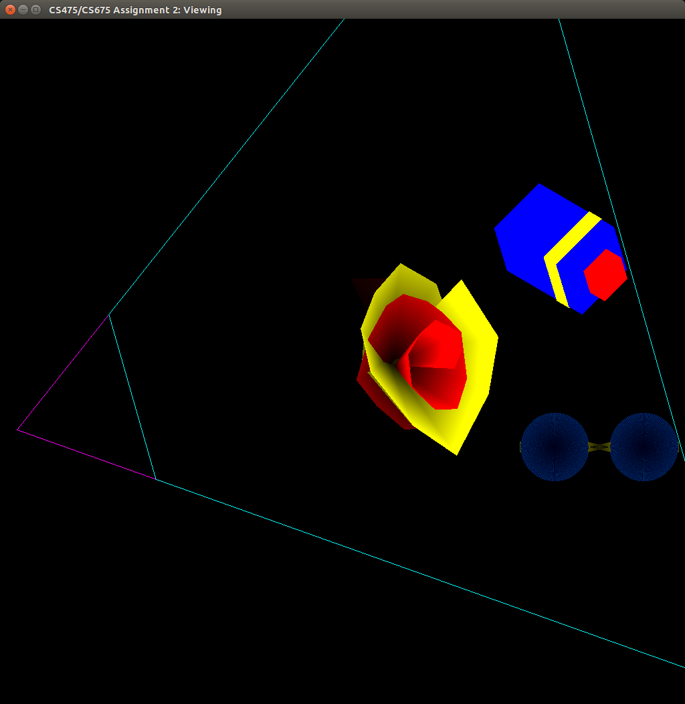
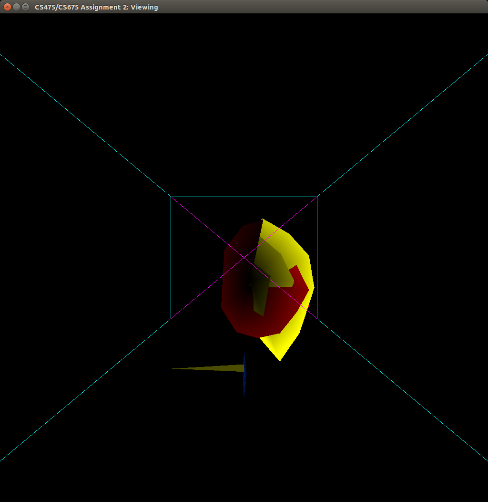
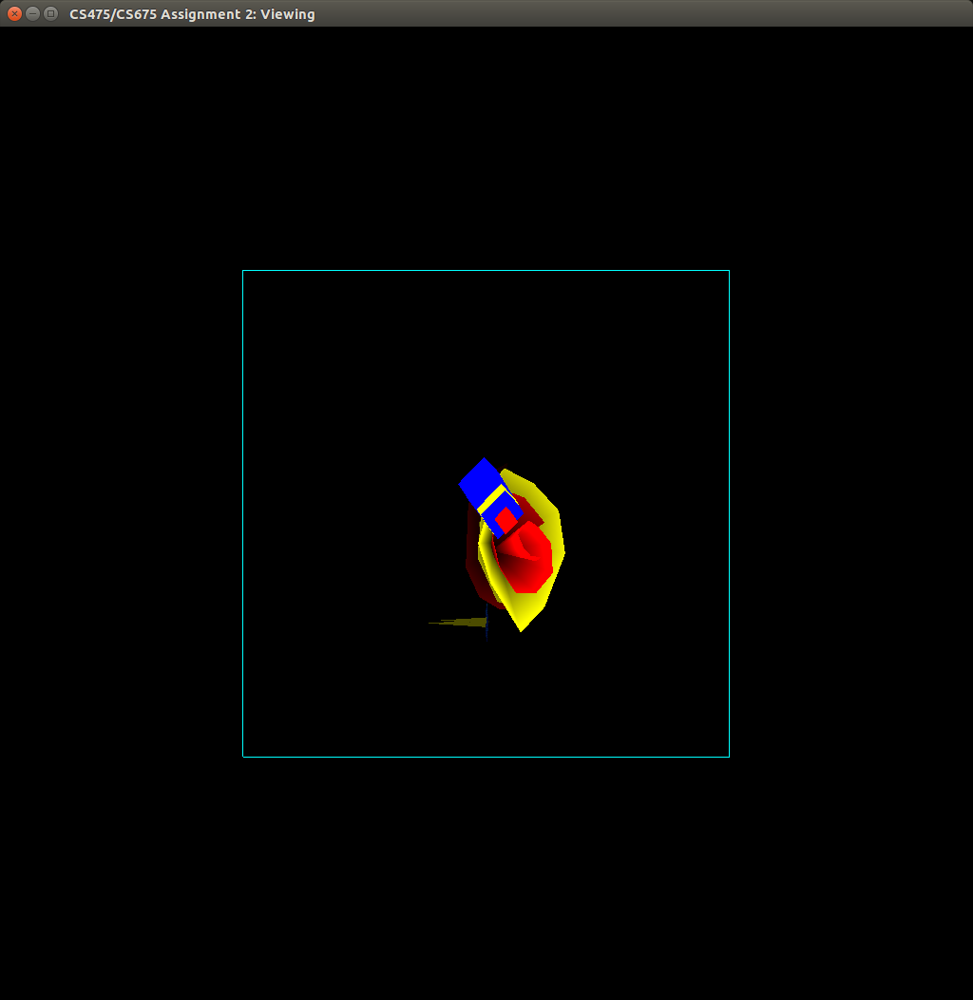
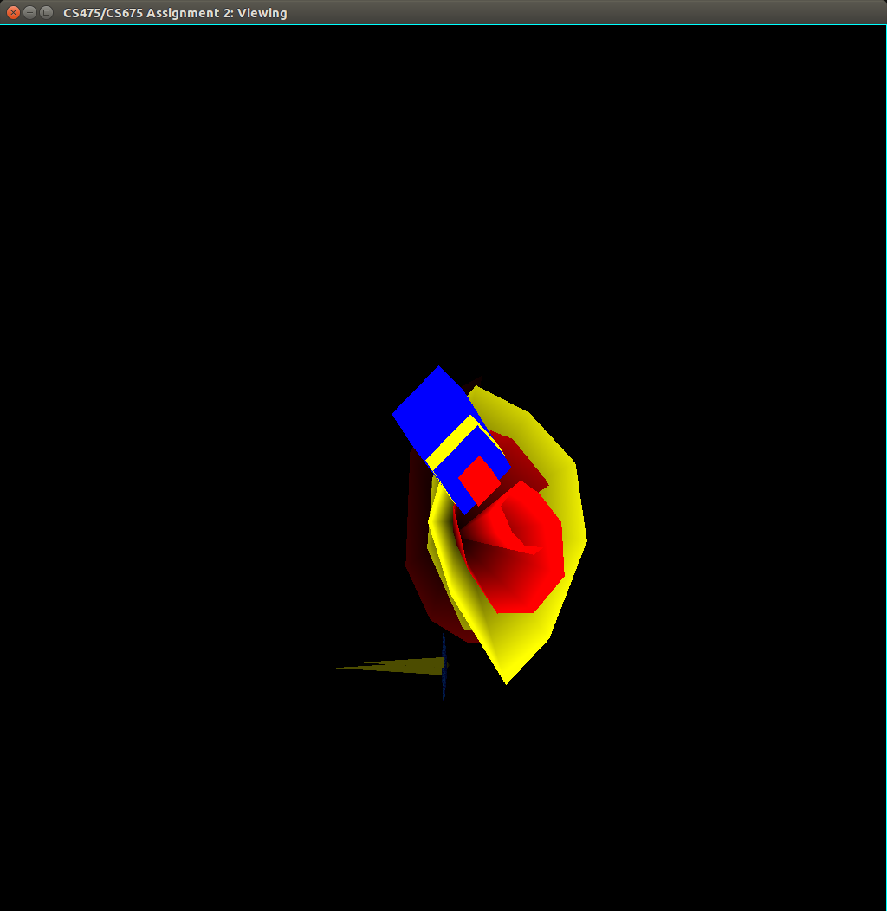

CS 475: Assignment 2 Report
Modelling-Viewing Pipeline : Viewing
The transformations we made:

World Coordinate System

View Coordinate System

Cube Coordinate System
Normalized Device Coordinate System

Device Coordinate System
Basic Working Instructions:
First we run the Makefile using
make
and the run the executable
./Assignment2
.
The scene file 'myscene.scn' is automatically loaded. So we have the 3 models and the frustum.
We can rotate all the objects by pressing the keys
W
,
S
,
A
,
D
,
Q
,
E
.
We can go to VCS by pressing
2
.
We can go to CCS by pressing
3
.
We can go to NDCS by pressing
4
.
We can go to DCS by pressing
5
.
We can go back to WCS by pressing
1
.
Team Members:
Dibyendu Mondal
130050046
Anand Bhoraskar
130050025